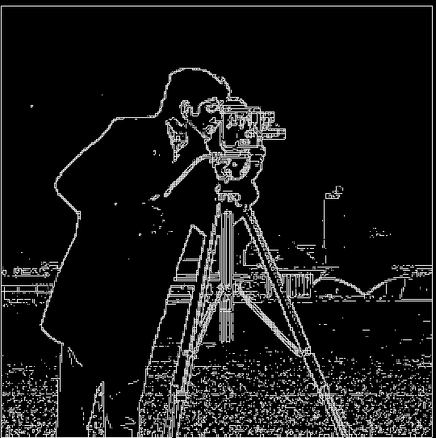
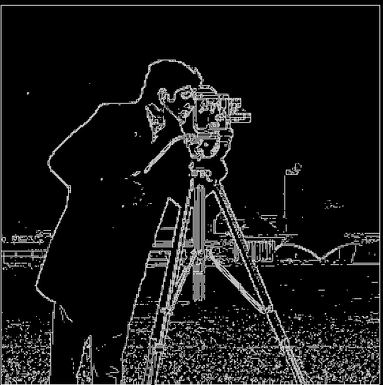
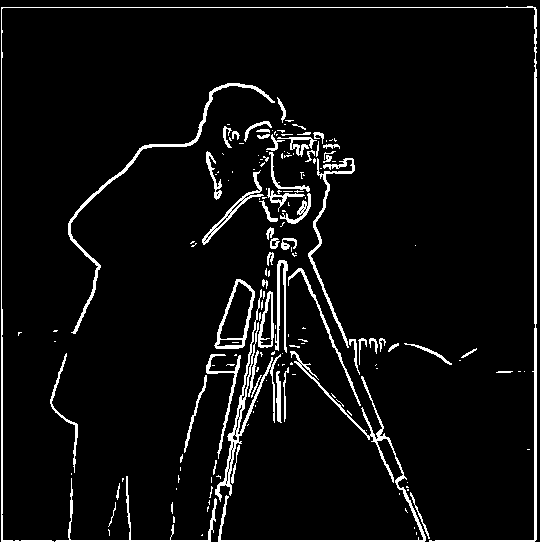
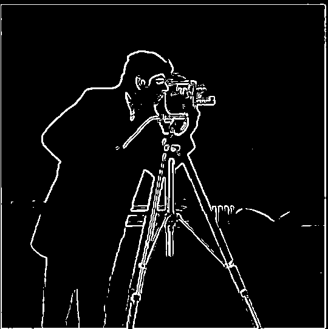

[A cameraman (cameraman.png); the derivative of cameraman.png w.r.t x; the derivative of cameraman.png w.r.t y; the gradient magnitude of cameraman.png; the gradient magnitude of camerman.png binarized with a threshold of 0.1.] We can use basic convolutional operations to obtain the partial derivatives (and subsequently the gradient) of an image. The gradient is calculated on a per-pixel basis as sqrt(dp/dx**2 + dp/dy**2).

 

[Improved versions of the previous images.] We can apply a Gaussian smoothing filter to cameraman.png. This replaces each pixel with a weighted average of its neighbording pixels. By smoothing the original image, we ensure that later operations are not disrupted by pixel-to-pixel noise. In particular, the binarized magnitude, which identifies the edges of an image, captures much less noise when applied to the smoothed version of cameraman.png.


[The D_x filter combined with Gaussian smoothing; the D_y filter combined with Gaussian smoothing; the results of applying these combined filters.] We can combine filters before applying them to an image. This ensures large images receive only one convolutional operation and saves runtime. Note that combining filters before applying them does not change the final result.

[The Taj Mahal (taj.png); a sharpened version of taj.png; an Overleaf ducky (overleaf.jpg); a sharpened version of overleaf.jpg. Also, Linux's Tux (tux.jpg); a Gaussian-smoothed version of tux.jpg; a sharpened version of the smoothed tux.jpg.] We can obtain the high frequencies of an image (i.e. the parts of the image with abrupt pixel-to-pixel changes) by subtracting a smoothed version of the image from the original. From the smoothening and subsequent sharpening of tux.jpg, we can see that sharpening is essentially the inverse of smoothing, which makes mathematical sense: the Gaussian smoothing is first added to tux.jpg and then subtracted away.
[A Ky Kiske plush (ky.jpg); a low-frequency version of ky.jpg; a Sol Badguy plush (sol.jpg); a high-frequency version of sol.jpg; a "hybrid image" combining ky.jpg and sol.jpg.] From close up, the high-frequency parts of an image dominate; from far away, the low-frequency parts dominate. By adding the low-frequency version of one image to the high-frequency version of another, we obtain a hybrid image that looks different at different distances.
[The log-magnitude Fourier transforms of the original images, followed by the filtered images, followed by the hybrid image.]


[More hybrid images with their inputs.] The last hybrid image, which combines the Golden Gate bridge and the Bay bridge, is somewhat poor because the bridges overlap poorly and the relative darkness of the Golden Gate overpowers the rest of the image.


[An apple; an orange; a splined "oraple" that transitions from apple to orange at the vertical halfway.] We can splice images along a specified "net" (such as their vertical or horizontal halfway) by following the "multiresolution spline" algorithm (Burt, Adelson). This algorithm relies on the calculation of Gaussian "stacks" (that is, the sequential results of repeated Gaussian smoothing) for the input images and the desired net.

[A hoodie; a carpet jacket; their horizontally splined combination.]
[A rose; a duck; a spline formed with a circlular net.] Note that the net of a spline does not need to be linear.